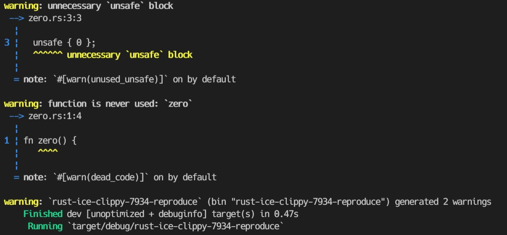
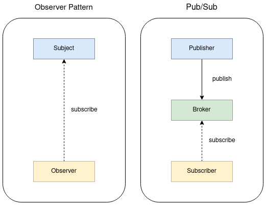

pub.docs
コンピュータ周りの知識置き場
GitHub repo: uta8a/pub.docs
LICENSE
私が書いている部分については CC-BY-4.0 で提供されます。
引用部分についてはそれぞれの引用元の LICENSE に従ってください。
Rust本体にコントリビュートしたい
方針: とりあえずIssueとPRをたくさん見て理解する
Todo
-
rustc-dev-guide を通して読む
- rustc-dev-guide を手を動かして読む
- ref. rust-lang/rustへのcode contributionをはじめからていねいに
- rust-lang/rust にPRを投げる
IssueとPRを読む
rust-lang/rust-clippy
Todo
- PR #7748 を読んで新しいclippyのrule追加について学ぶ。
IssueとPRを読む
Issue #7826
will machine readable format be added? or is there already one?
質問タイプ。エラーメッセージやlinterの出力を人間フレンドリーでなく機械フレンドリーなものはありますか？という疑問。
回答として、rustc book / JSON outputがあげられているので読んでみる。
rustcによって出力されるJSON。これは --error-format=json flagをつけることで出てくる。
実際に unused variable でJSON形式でエラーを出してみた。
挙動
- 正常にコンパイルされエラーが出ないならばJSONも出力されない(空の
{}すら出てこない) - メッセージが出るならば、メッセージひと単位あたりひとつのJSONが出力される。区切り文字は改行のようだった。このメッセージは cargo_metadata を用いてパースしたりできるらしい。
fn main() { println!("HELLO: {}", 123); let x = 1234; // unused value }

Issue #7934
ICE with
clippy::undocumented_unsafe_blocks
portable-simdでICE(Internal Compile Error)が起きる。
これrustcの問題では？と思ったが、報告されているエラーメッセージには以下のようにclippyに報告するように書いてある。
error: internal compiler error: unexpected panic
note: the compiler unexpectedly panicked. this is a bug.
note: we would appreciate a bug report: https://github.com/rust-lang/rust-clippy/issues/new
MCVE(Minimal Complete and Verifiable Example ようは条件を満たす最小単位のこと、この場合だとICEになる最小再現コード)が提示されている。試してみる。
stableでは再現しなかった。nightlyを入れて rustup run nightly cargo run してもこのバージョンより新しいから(おそらく修正済みになっており)再現しなかった。

関連して PR #7945 を読む。
PR #7945
Fix ICE in undocumented_unsafe_blocks
Issue #7934 の解決PR。
MCVEはテストに利用されるみたい。clippyでは tests/ui/crashes にICEが置かれるのかな。 auxiliary というディレクトリがある。auxiliaryは意味的に補助ということらしい？uiはどういう意味なんだろう。おそらく、複数ファイルによるtestは補助ディレクトリにmain.rs以外を置いてtests/ui/crashes以下にmain.rsをice-<number>の形で置いているみたい？
rust-clippyのclippy_lints/src以下 にruleがめちゃ置いてある。今回はこの中のlintのルールのひとつである undocumented_unsafe_blocks が修正されている。このルールは PR #7748 で追加されている。このlintは2人が別々に実装し結局こっちが採用された経緯があるみたい。確かにOSSで実装がバッティングしちゃうのはありそう。
ひとりCPU実験余興をしたい
低レイヤに強くなりたい
雑多なもの
まとまってきたらページに切り出す
方針
僕が分からないこと一覧から見る
通知について
Pub/Sub 方式とは何か？
publish/subscribe を表す。ソフトウェアデザインパターンのひとつで、クラウドや分散システムの文脈で登場する。
以下の 3 つの要素で構成される
- Broker
- メッセージを仲介する。Publisher から送られたメッセージがプールされていて、そのメッセージをトピックやメッセージの内容でフィルタリングして Subscriber に渡す
- Publisher
- メッセージを送信する。トピックベースであれば、トピックを指定してメッセージを Broker に渡す。
- Subscriber
- メッセージを受信する。トピックベースであれば、トピックを指定して Broker からメッセージを受け取る。
実際は PUSH 通知のような多くのユーザに同一のメッセージを送る場面で用いられる。また、Google Cloud Pub/Sub のユースケースによると、リアルタイムデータ分析にも用いられているようだ。主なサービスとして、AWS Simple Notification Service(SNS), Google Cloud Pub/Sub があり、OSS では RabbitMQ、Kafka がある。(Pub/Sub という名前なのでここで触れたが、実装がどうなっているか分からないので、原義の Pub/Sub 方式に沿ったサービスかどうかは分からない。)
有名なデザインパターンに Observer パターンというものがある。これとの違いは、Broker に相当する存在があるかないかである。Observer パターンでは送信者と受信者が直接やり取りするが、Pub/Sub では間に Broker が入る。

MQTT について MQTT は、Message Queueing Telemetry Transport を表す。Pub/Sub 方式で実装された IoT 向けのプロトコル。IBM 社と Eurotech 社にのメンバーよって考案され、もとのプロジェクトである Paho は Eclipse Foundation に寄贈されたようである。(Eclipse Paho™ MQTT Python Client) MQTT の OSS としてはmosquittoが有名。また、MQTT は Facebook Messenger で使用されているらしい。
todo!
- Google Cloud Pub/Sub のチュートリアルをやってみる
- 自分で実装してみる 参考リンク
ref.
- Pub/Sub メッセージングモデルの業務利用における難しさ Pub/Sub の定義について
- 出版-購読型モデル - wikipedia
- Python における Pub/Sub パターンの実装 特に Observer と Pub/Sub の違いについてと、実装
- 初めての MQTT MQTT について
malloc について
todo!
- malloc を実装してみる
- malloc の動作を追いかけるを読む
- 迷路本を読む。ここらへんは CTF の Pwn(特に heap)を学んだほうがイメージ付きやすいこともありそう
ref.
グラフィックスについて
ref.
https://raytracing.github.io/books/RayTracingInOneWeekend.html
https://zenn.dev/mebiusbox/books/8d9c42883df9f6/viewer/b85221